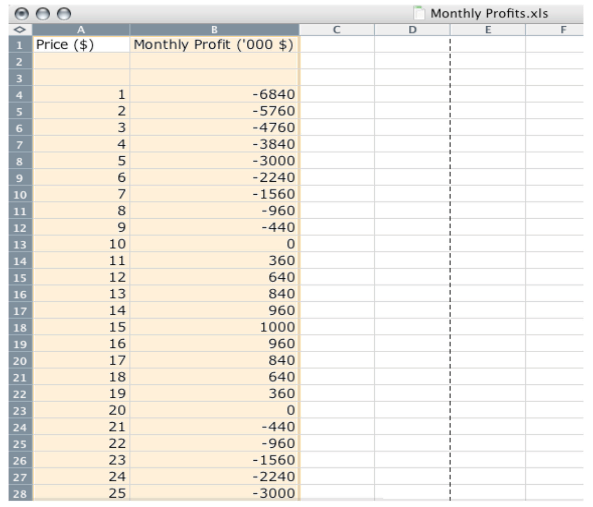
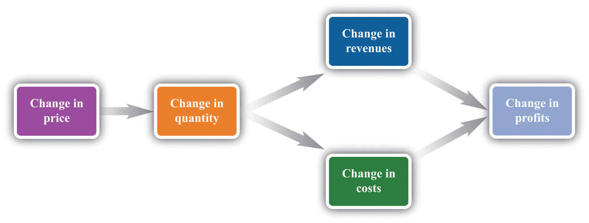
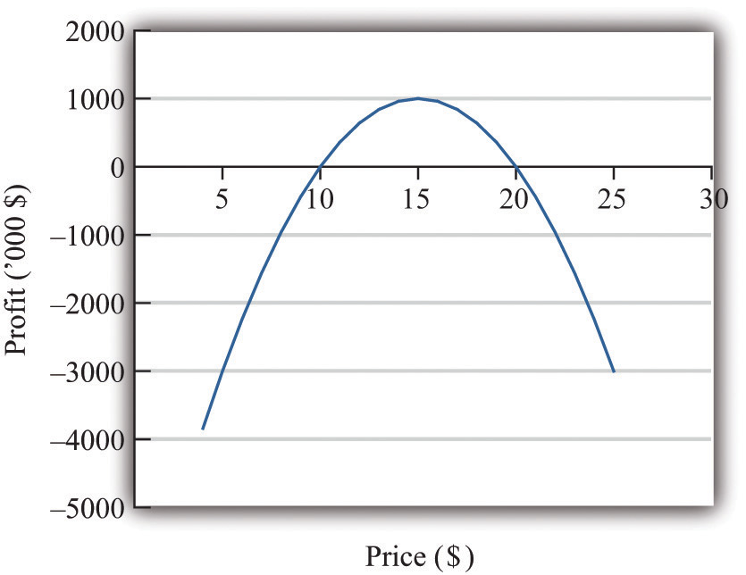

Firms devote substantial resources to their decisions about pricing. Large firms often have individuals or even entire departments whose main job is to make pricing decisions. Consulting firms specialize in providing advice to firms about the prices that they should charge. Some companies, such as airlines, have dedicated software to help them make these decisions. It isn’t hard to understand why firms pay so much attention to the prices they charge. More than anything else, price determines the profits that a firm earns.
Economists are prone to talk about the decisions and objectives of a firm, and we often use the same shorthand. A firm, though, is just a legal creation—a collection of individuals who use some kind of technology. A firm takes labor, raw materials, and other inputs and turns them into products that people want to buy. Some of the people in a firm—the managers—decide how many workers it should hire, what prices it should set, and so on.
To understand pricing, we begin with the goal of a firm (that is, its managers). If a firm’s managers are doing their jobs well, they should be making decisions to serve the interests of the owners of that firm. The owners of a firm are its shareholders. If you buy a share in a firm, then you own a fraction (your share) of the firm, which gives you the right to a fraction of the firm’s earnings. Shareholders, for the most part, have one reason for buying and owning shares: to earn income. So the managers, if they are doing their jobs well, want a firm to make as much money as possible. We need to be careful, though. What matters is not the total amount of money received by a firm, but how much is available to be distributed to its owners. The owners of a firm hope to earn as high a return as possible on their shares.
Toolkit: Section 31.15 "Pricing with Market Power"
The money that is available for distribution to the shareholders of a firm is called a firm’s profits. A firm pays money for raw materials, energy, and other supplies, and it pays wages to its workers. These expenses are a firm’s costs of production. When it sells the product(s) it has produced, a firm earns revenues. Accountants analyze these revenues and costs in more detail, but in the end all the monies that flow in and out of a firm can be classified as either revenues or costs. Thus
profits = revenues − costs.Consider, then, a marketing manager who wants to set the best price for a product—such as Ellie choosing the price for her company’s blood pressure medication. She wants to find the price that will yield the most profits to her company. In an ideal world, a marketing manager might have access to a spreadsheet table, such as Figure 7.1 "A Spreadsheet That Would Make Pricing Decisions Easy", which displays a firm’s monthly profits for different possible prices that it might set. Then Ellie’s job would be easy: she would just have to look at the table, find the cell in column B with the highest number, and set the corresponding price. In this case, she would set a price of $15.
Figure 7.1 A Spreadsheet That Would Make Pricing Decisions Easy
But the reality of business is different. It is very difficult and expensive—perhaps even impossible—to gather information such as that in Figure 7.1 "A Spreadsheet That Would Make Pricing Decisions Easy". You might imagine that a firm could experiment, trying different prices and seeing what profitsRevenues minus costs. it earned. Unfortunately, this would be very costly because most of the time a firm would earn much lower profits than it could. Experimenting might even generate losses. For example, suppose that, one September, Ellie chose to try a price of $2 per pill. The firm would lose nearly $6 million—the equivalent of about six months’ profits even at the very best price. Ellie would rapidly find herself looking for another job.
It is clear that trial and error—choosing different prices at random and seeing how much profit you get—could lead to costly mistakes, and there is no guarantee that you would ever find the best price. By adding some structure to a trial-and-error process, though, there is a simple strategy for finding the best price: begin by slightly raising the firm’s price. If profits increase, then you are on the right track. Keep raising the price, little by little, until profits stop increasing. On the other hand, if profits decrease when you raise the price, then you should try lowering the price instead. If profits increase, then keep lowering the price little by little.
Figure 7.2 "A Change in Price Leads to a Change in Profits" shows how a change in price translates into a change in profits. A change in a firm’s price leads to a change in the quantity demanded. As a result, the revenuesWhat a firm receives for selling its output, which is equal to the price received per unit sold times the number of units sold. and costsThe payments a firm makes for its inputs, such as wages for its workers. of a firm change, as do its profits. Figure 7.3 "The Profits of a Firm" shows the profits a firm will earn at different prices. Our pricing strategy simply says the following. You are trying to get to the highest point of the profit hill in Figure 7.3 "The Profits of a Firm", and you will get there eventually if you always walk uphill. At the very top of the hill, the change in profits is zero.
Figure 7.2 A Change in Price Leads to a Change in Profits
If a firm changes its price, then there will be a change in demand. This then leads to changes in revenues and costs, which changes in the profits of a firm.
Figure 7.3 The Profits of a Firm
We could end the chapter right here. But we want to dig deeper and uncover some principles that tell us more about how pricing works. Then we can learn what information Ellie and other managers like her need to make better pricing decisions—and how they can make these decisions effectively. Our starting point is our earlier observation that
profits = revenues − costs.